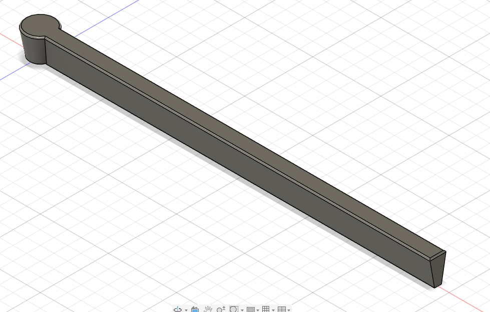
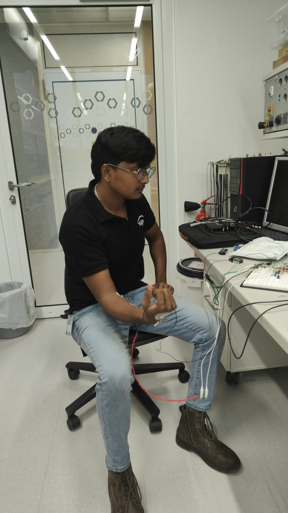
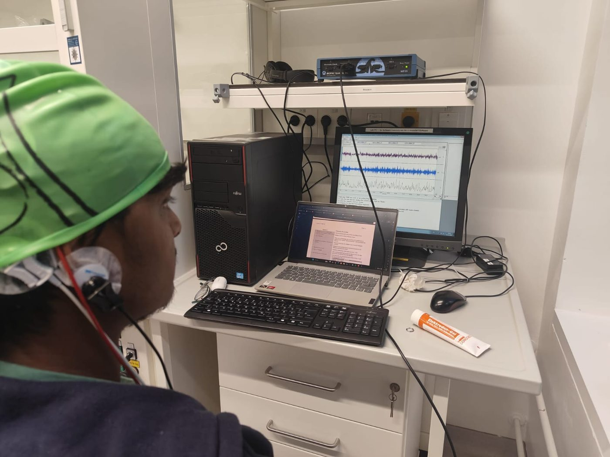
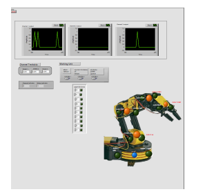

Test & validation
Bench testingTest setupsCalibrationReference measurementsCharacterisation
I'm Aakash Suresh, a medical device engineer working across 3D CAD design, prototyping, bench testing and biomedical instrumentation. M.Sc. Microsystems Engineering at the University of Freiburg; thesis at the University of Basel.
Part and assembly modelling for device housings, fixtures and microscale prototype structures, taken through to physical builds and bench tests.
Maternal EMG, fetal ECG and accelerometer positioning in one wearable, with low-noise acquisition hardware and LSTM-based labor forecasting. Indian Designs Act, Class 24-01.
Microfluidic chip modelled in Fusion 360 for the neuron-on-chip platform at the University of Freiburg's Neptun Lab, designed for physical prototyping, assembly and testing.

I built a low-noise analog front-end with differential amplification and filtering to acquire EMG, ECG and EEG, processed the signals in real time in LabVIEW and used them to control a robotic arm. The photos show the acquisition sessions: EMG from surface electrodes on the forearm through a breadboard front-end, and EEG from an electrode cap with a BIOPAC MP35.



A compact intraoral sensing device with its own data-acquisition and calibration setup, taken from prototype to bench verification at the University of Basel.
MATLAB segmentation and feature-extraction pipeline for prenatal ultrasound, presented at an ISO/IEC 17025 calibration seminar.
University of Freiburg · Oct 2024 – now
Grade 2.3 (German scale)
Kumaraguru College of Technology · 2018 – 2024
CGPA 9.22 / 10 · German 1.5
English C1 · German A2
Hiring for medical device development, test or verification? I'm happy to share more about my thesis work and prototypes.